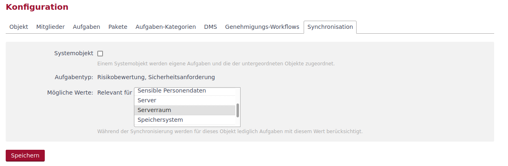
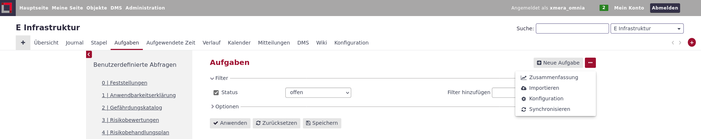
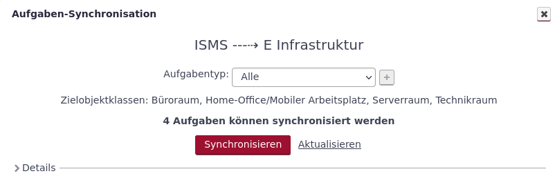
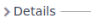
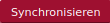
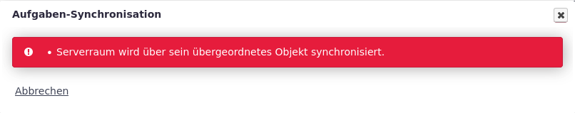
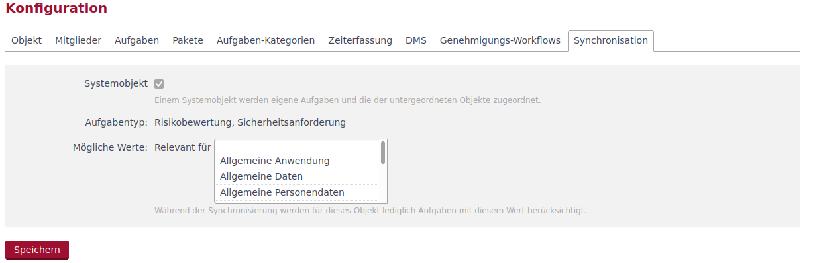

Aufgaben-Synchronisation
Funktionen Aufgaben-Synchronisation
Das Modul Aufgaben-Synchronisation ist entwickelt worden, um die Modellierung von Sicherheitsanforderungen, Zuordnung von Gefährdungen oder eigenen Anforderungen/Aufgaben im ISMS-Umfeld automatisiert durchführen zu können.
Voraussetungen zur Synchronisation
Die Synchronisation dient der automatisierten Zuordnung von Aufgaben zu Objekten. Zur Durchführung einer Synchronisation müssen einige Voraussetzungen erfüllt sein:
-
Es existiert ein Katalog-Objekt, das die zu synchronisierenden Elemente enthält.
-
Das Katalog-Objekt wurde innerhalb der globalen Konfiguration angegeben.
-
Ein Eigenes Feld wurde innerhalb der globalen Konfiguration als Zuordnungselement gewählt.
-
Das Modul Aufgaben-Synchronisation ist in dem zu synchronisierenden Objekt aktiviert und konfiguriert.
In der Administration wird festgelegt, in welchem Objekt die Aufgaben liegen, die synchronisiert werden sollen (Katalog-Objekt). Weiter wird festgelegt, welche Aufgabentypen zur Synchronisation genutzt werden können und in welchem eigenen Feld die Zuordnungselemente abgebildet werden.
Die zu synchronisierenden Aufgaben müssen dieses Eigenes Feld besitzen und dem gewählten Aufgabentyp entsprechen.
In dem zu synchronisierenden Objekt muss das Modul Aufgaben-Synchronisation aktiviert sein und es muss in der Modulkonfiguration mindestens ein möglicher Wert als Zuordnungselement ausgewählt sein.

| Bei der Synchronisation werden die Standard-Kopiermechanismen des Systems genutzt, so dass hier die in der Administration gewählte Option, wie mit der Verlinkung beim Kopieren umgegangen wird, auch für den Synchronisationsprozess gilt. |
Starten und Durchführen der Synchronisation
Gestartet wird die Aufgaben-Synchronisation aus dem Reiter Aufgaben. Hier wird bei Aktivierung des Moduls Aufgaben-Synchronisation im 3-Punkte-Menü die Auswahl Synchronisieren angeboten.

Mit dem Klick auf Synchronisieren wird der Synchoronisationsdialog geöffnet.

In dieser Maske werden zunächst Quell- und Zielobjekt dargestellt. Wenn bei der Aufgabensynchronisation mehrere Aufgabentypen für die Synchronisation konfiguriert wurden, besteht die Möglichkeit, die Synchronisation auf einen (Dropdown) oder mehrere ( + ) Aufgabentypen einzugrenzen.
Nach einer Änderung in der Auswahl eines Aufgabentyps muss durch einen Klick auf Aktualisieren die Neuberechnung der zu synchronisierenden Aufgaben angestoßen werden.
Unterhalb der Auswahl der Aufgabentypen werden die Zielobjektklassen aufgelistet. Im Beispiel sind es die Klassen: Büroraum, Home-Office/Mobiler Arbeitsplatz, Serverraum, Technikraum.
Es wird die Anzahl an Aufgaben dargestellt (im Beispiel 4 Aufgaben), die synchronisiert werden können. Klappt man den Bereich  auf, werden die Aufgaben konkret aufgelistet.
Mit dem Klick auf den Button  wird der Synchronisationsprozess gestartet.
Funktionsweise Systemobjekt
Um das Bündeln von Aufgaben an einem überlagerten Objekt zu ermöglichen, steht die Funktionalität des Systemobjekts zur Verfügung. Ist ein Objekt ein Systemobjekt, so werden beim Synchronisieren nicht nur die Kriterien des Systemobjekts, sondern auch die aus den hierarchisch unterlagerten Objekten berücksichtigt.
| Wird die Synchronisation an einem Objekt durchgeführt, das ein überlagertes Systemobjekt besitzt, wird die Synchronisation mit der Fehlermeldung (Objektname) wird über sein übergeordnetes Objekt synchronisiert. abgebrochen. Beispiel:  |
Das Systemobjekt wird in der Modulkonfiguration des Objektes festgelegt.

Werden in einem Hierarchiebaum mehrere Systemobjekte gesetzt, so kann die Synchronisation nur am obersten Objekt ausgeführt werden, da alle unterlagerten Objekte ein überlagertes Systemobjekt besitzen und damit (siehe Notiz oben) der Synchronisationsprozess abgebrochen wird.